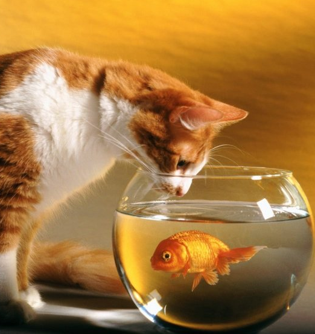

|
|

Решили завести кошку?
У 80% людей на земле живут различные домашние питомцы. Самые распространенные питомцы – это кошки и собаки, хотя встречаются и более экзотические – пауки, змеи, хорьки и даже крокодилы. Но какой бы ни был у вас питомец, каждому из них нужно внимание и забота. Возможно, вы не раз уже пытались завести котенка, но вам не разрешали родители. Причины могут быть разные. Возможно, у кого-то из членов семьи аллергия на кошек, но скорее всего, ваша мама просто подозревает, что для вас котенок будет просто игрушкой, в то время как все заботы по уходу за животным достанутся ей. Если вы решили завести котенка в качестве питомца, то должны знать, что за кошками нужно тщательно ухаживать.
Полезные советы
Если вы твердо решили завести в доме котенка, то в первую очередь побеспокойтесь о его безопасности: избавьтесь от ядовитых комнатных растений.
Установите на окнах (форточках) решетки или затяните балкон металлической сеткой, чтобы котенок не мог упасть.
Массу опасностей для кошек таит в себе кухня (газ, духовка и т.д.), и лучше сделать так, чтобы животное бывало там как можно реже.
Потенциальную угрозу представляет также стиральная машина - ваша любимица может устроиться в ней на отдых с соответствующими последствиями.
Совершенно недоступными для кошек должны быть различные моющие средства, инсектициды и прочие средства бытовой химии, а также человеческие лекарства
Необходимо убрать любые мелкие предметы, которые котенок может случайно проглотить. Опасность для котенка представляет и электропроводка - ни в коем случае нельзя допустить, чтобы котенок грыз провода. Обо всем этом следует позаботиться еще до его появления в доме.
Желательно также заранее обустроить в квартире подходящую для кошки охотничью территорию. Для этого нужно оборудовать укромные места, где ей можно уединяться и, конечно, обзавестись подходящими игрушками. Если дома кошке охотиться не на кого, то свой охотничий инстинкт она вынуждена удовлетворять, "охотясь" на хозяев. Она может внезапно прыгнуть на них со шкафа или с платяной полки, либо наброситься из-за угла и куснуть за ноги. Для кошки такое поведение вполне естественно.
Домашние животные отличаются от диких тем, что во время ходьбы у дикого кота хвост расположен горизонтально, а у домашнего находится в вертикальном положении
Сразу после появления в доме котенка выделите ему специальное место для отправления естественных надобностей. Не забывайте, что кошки - чистюли и предпочитают справлять нужду в уединенных и темных местах. Лучше сразу приучить котенка ходить в закрытый пластмассовый туалет с удобным лазом и с наполнителем, но не с песком. Кошки обычно закапывают свои фекалии, а песок пропитывается запахом, да и кошка на своих лапах разносит его по всему дому
Вам также понадобятся миски, "когтеточка" - заменитель дерева для царапанья, а также контейнер для транспортировки, который может одновременно служить для кошки в квартире укромным убежищем.
|